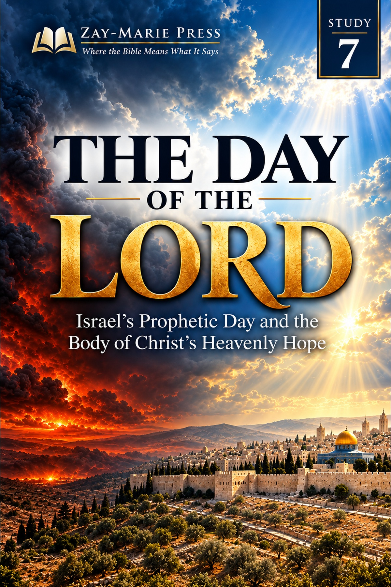
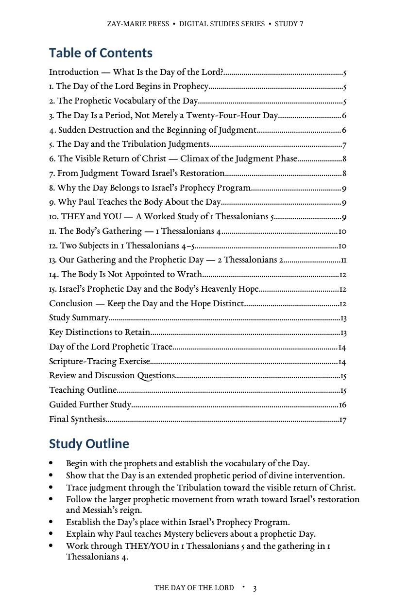
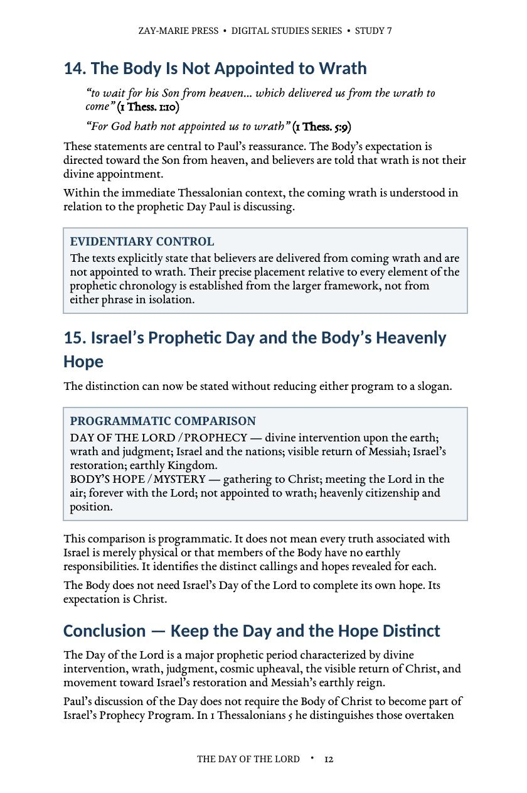
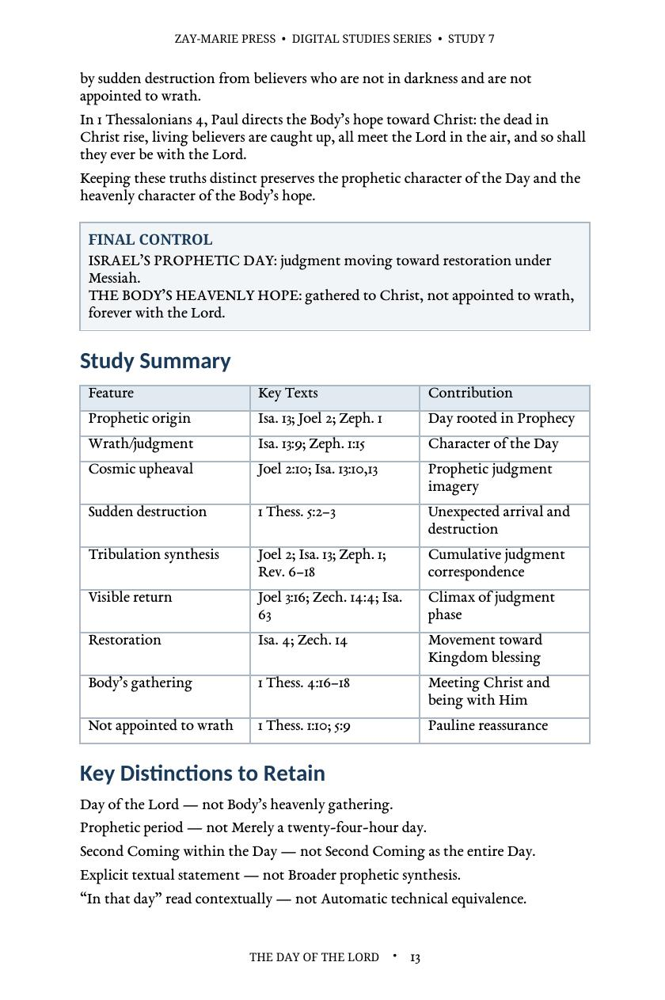

The Day of the Lord
Israel’s Prophetic Day and the Body of Christ’s Heavenly Hope
A Biblical Examination of Prophetic Judgment, Wrath, Christ’s Visible Return, Israel’s Restoration, and the Body’s Heavenly Hope
The Day of the Lord is not a general name for the Body’s future hope. It is Israel’s prophetic period of divine intervention—wrath, darkness, judgment, Christ’s visible return, and restoration. This study traces that prophetic Day from Scripture while distinguishing it from the Body of Christ’s gathering to the Lord and heavenly hope.
What Is the Day of the Lord?
The Day of the Lord is first established in the prophets. Its repeated vocabulary marks an extended period of divine intervention characterized by wrath, darkness, judgment, and the visible return of Christ, culminating in Israel’s restoration.
Paul can instruct the Body of Christ about this prophetic Day without making it the Body’s hope. This study maintains a clear distinction between the Day of the Lord and the Body’s gathering to Christ, our being forever with Him, and our promise of not being appointed to wrath.
This is not a study of Paul’s own Day-of-Christ expressions, which Study 8 traces on their own terms, nor of whether the Body belongs inside the coming Tribulation, which Study 3 examines directly. Its task is narrower: to establish the prophetic Day of the Lord from the Prophets themselves — its judgment, darkness, and Israel’s restoration — and to keep the Body’s hope of gathering to Christ from being absorbed into a Day that belongs to a different program.
How These Studies Relate
Study 7 traces the prophetic Day of the Lord through judgment and Israel’s restoration.
Study 8 — The Day of Christ Compare Paul’s actual Day-of-Christ expressions with this prophetic Day, so similar sounding phrases are not assigned the same setting or every later event indiscriminately.
Study 3 — The Body of Christ and the Tribulation Consider whether the Body belongs to the prophetic Tribulation. That question matters when identifying who participates in the judgments described here.
Keep the Day and the Hope Distinct
The Day Begins in Prophecy
Establish its prophetic vocabulary, purpose, and extended character.
Judgment, Wrath, and Return
Follow the Day through judgment to its visible climax in Christ’s return.
Israel’s Restoration and Kingdom Hope
See why judgment belongs within Israel’s prophetic future and restoration.
Why Paul Teaches the Body About the Day
Learn how a Pauline epistle can address a prophetic subject without redefining its setting.
THEY and YOU
Work through Paul’s contrast in 1 Thessalonians 5 between those overtaken by the Day and believers identified differently.
The Body’s Gathering and Hope
Keep 1 Thessalonians 4 distinct from the Day of the Lord in chapter 5.
Examine the Passages for Yourself
Joel 2:1–31
Provides the prophetic vocabulary of darkness, wrath, and the Day’s intervention.
Isaiah 13:6–13
Associates the Day with divine judgment and cosmic disturbance.
Zephaniah 1:14–18
Describes the Day as a period of wrath, distress, and devastation.
Zechariah 14:1–9
Connects the Day with the Lord’s visible intervention and Kingdom reign.
1 Thessalonians 4:13–18
Establishes the Body’s gathering to Christ and enduring relationship with Him.
1 Thessalonians 5:1–11
Places the Day of the Lord beside Paul’s THEY/YOU distinction and assurance concerning wrath.
2 Thessalonians 2:1–12
Addresses our gathering and the prophetic Day without forcing a complete chronology.
Revelation 6–19
Provides the broader judgment context leading toward Christ’s visible return.
Israel’s Prophetic Day and the Body’s Heavenly Hope
“The Day of the Lord belongs to Israel’s prophetic future, while the Body of Christ possesses a distinct heavenly hope.”
The distinction preserves both subjects: Israel’s prophetic Day of judgment, visible return, and restoration; and the Body’s gathering to Christ, enduring relationship with Him, and assurance that it is not appointed to wrath.
Preview the Study Before You Purchase
Click any page to enlarge it for reading.
{kind=link}

Study Outline
Review the Day’s prophetic scope, the Body’s hope, and the study’s central distinctions.
{kind=link}
{kind=link}

Wrath and Heavenly Hope
See why the Body is not appointed to wrath and why its hope remains distinct.
{kind=link}

Study Summary
Review the prophetic Day, key distinctions, and Scripture-tracing exercise.
A Focused Study Built for
Understanding and Teaching
17-Page In-Depth Biblical Study
A careful biblical study of Israel’s prophetic Day and the Body’s distinct hope.
15 Core Teaching Sections
Follow the Day from prophetic warning through judgment, return, and restoration.
THEY/YOU Worked Study
Examine the contrast Paul draws in 1 Thessalonians 5.
Prophetic Vocabulary Trace
Compare the Scriptures that define the Day’s darkness, wrath, judgment, and restoration.
18 Review Questions
Test the study’s distinctions regarding the Day, wrath, gathering, and hope.
Teaching Outline
A ready framework for explaining the Day and the Body’s heavenly hope.
Eight Guided Investigations
Work directly from the prophets, Thessalonian letters, and judgment passages.
Final Synthesis Exercise
Write a complete explanation that keeps the Day and the hope distinct.
The Day of the Lord
17-page digital PDF · For personal use
Want More Than a Focused Study?
Digital Studies examine particular biblical subjects and difficult passages. The 40-lesson Biblical Hermeneutics course teaches a complete, repeatable method for establishing meaning in context, determining proper assignment, and making responsible application.